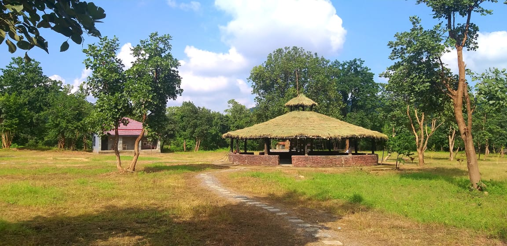
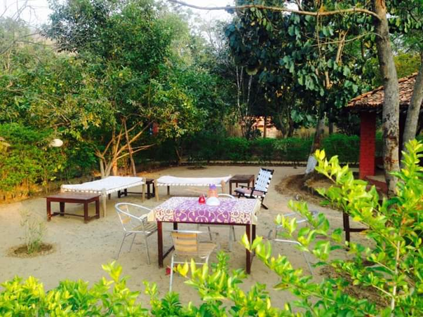
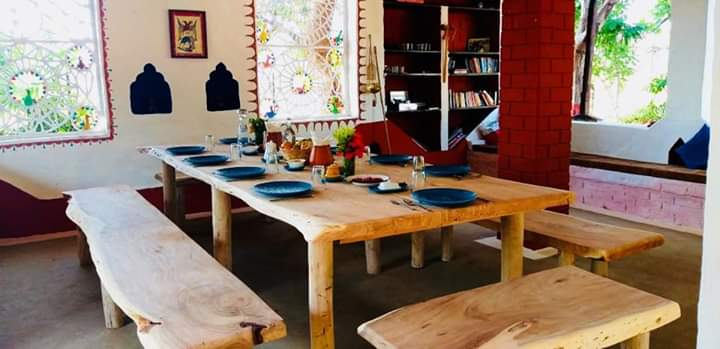

ACCOMMODATION




:-The retreat itself a sensitively designed farmhouse style plot that Sunny transformed from overgrazed scrubland into a well wooded garden:
now home to birds and butterflies and frogs and flowers.
:-There are five rooms, all opening onto shady verandas that surround a central courtyard with numerous spots in which to lounge and snooze
or read. A separate house on the edge of the compound with its own small kitchen for making tea and coffee is also available for those
who want a bit of extra privacy and independence.
Food is delicious Chhattisgarhi village style, mainly vegetarian and more like the food you would find in Indian homes than hotels.
It is one of the many things all guests comment on.
At BJR guests get to enjoy a slice of rural Indian life, knowing well that their stay
there will only have a positive impact on the local people and habitat.